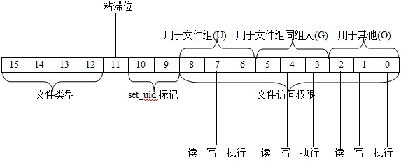

在Linux中，访问权限设置比较复杂，我头都晕了。
Linux中用一个16位的短整数来表示文件的访问模式，这个数字的结构如下所示：

其中，后9位用于文件的权限控制，分别为文件组的权限，同组人的权限，其他权限，而这9位又分为了三个三位的八进制，每一位分别对应读、写、执行等，如chmod 755，这里面的7、5、5分别对应了三个三位的八进制权限，对这些位的定义如下：
{kind=link}
1 2 3 4 5 6 7 8 9 10 11 12 13 14 |
#define S_IRWXU 00700 #define S_IRUSR 00400 #define S_IWUSR 00200 #define S_IXUSR 00100 #define S_IRWXG 00070 #define S_IRGRP 00040 #define S_IWGRP 00020 #define S_IXGRP 00010 #define S_IRWXO 00007 #define S_IROTH 00004 #define S_IWOTH 00002 #define S_IXOTH 00001 |
注意：这里面有三组，分别表示U,G,O.
Linux中有一类文件称为set_uid文件，这种文件允许使得任何用户在执行该文件的时候暂时有该文件的“文件主”的权限，执行完毕则又回到原来的权限。但是这种方式上对于系统的安全性不好。
粘滞位是对于一些频繁运行的程序，标志位设置成1，让内核尽量不释放该程序的内存映像，这样下次启动的时候就不必要从磁盘装入了。
最高四位表示的是文件类型，使用的是编码方式，类型的说明如下：
1 2 3 4 5 6 7 8 9 10 11 12 13 14 15 16 17 18 19 20 21 22 23 24 25 26 27 28 |
/* The admissible values for i_mode are listed in <linux/stat.h> :
* #define S_IFMT 00170000 mask for type
* #define S_IFREG 0100000 type = regular file
* #define S_IFBLK 0060000 type = block device
* #define S_IFDIR 0040000 type = directory
* #define S_IFCHR 0020000 type = character device
* #define S_IFIFO 0010000 type = named pipe
* #define S_ISUID 0004000 set user id
* #define S_ISGID 0002000 set group id
* #define S_ISVTX 0001000 save swapped text even after use
* Additionally for SystemV:
* #define S_IFLNK 0120000 type = symbolic link
* #define S_IFNAM 0050000 type = XENIX special named file ??
* Additionally for Coherent:
* #define S_IFMPB 0070000 type = multiplexed block device ??
* #define S_IFMPC 0030000 type = multiplexed character device ??
*
* Since Coherent doesn't know about symbolic links, we use a kludgey
* implementation of symbolic links: i_mode = COH_KLUDGE_SYMLINK_MODE
* denotes a symbolic link. When a regular file should get this mode by
* accident, it is automatically converted to COH_KLUDGE_NOT_SYMLINK.
* We use S_IFREG because only regular files (and Coherent pipes...) can have
* data blocks with arbitrary contents associated with them, and S_ISVTX
* ("save swapped text after use") because it is unused on both Linux and
* Coherent: Linux does much more intelligent paging, and Coherent hasn't
* virtual memory at all.
* Same trick for Xenix.
*/ |
在文件系统inode数据结构中有一个字段为i_flags，也是用来控制权限的，具体说明在后面。
在Linux的task_struct结构中有如下几个关于用户和组的字段：
1 2 3 4 |
uid_t uid,euid,suid,fsuid; gid_t gid,egid,sgid,fsgid; gid_t groups[NGROUPS]; |
1、每个用户被授予一个唯一的uid（用户号），注意一个用户只对应一个uid但是一个uid可以对应多个用户。
2、每个用户都属于一个组，组号为gid，uid和gid是登录的时候从/etc/passwd中取出的。
3、euid表示当前有效的uid。
4、egid表示当前有效的组号。
5、当euid改变的时候将原来的euid保存至suid中。
6、当egid改变的时候将原来的egid保存至sgid中。
7、fsuid和fsgid用于网络文件系统NFS，一般与euid和egid相同，但是在特殊情况下可以不同，是专用于文件访问目的的有效uid。
8、groups表示的文件的“候补组号”，一个文件（程序）可以属于多个组。
了解了这些，可以看看文件系统的权限判定了，权限判定函数主要是由函数permission()来完成的，其代码在fs/namei.c中：
1 2 3 4 5 6 7 8 9 10 11 |
int permission(struct inode * inode,int mask) { if (inode->i_op && inode->i_op->permission) { int retval; lock_kernel(); retval = inode->i_op->permission(inode, mask); unlock_kernel(); return retval; } return vfs_permission(inode, mask); } |
其中，参数inode是需要判定的文件的inode，mask代表这访问方式标志位，只有后三位有用，分别代表可读、可写、可执行，定义如下（include/linux/fs.h）：
1 2 3 |
#define MAY_EXEC 1 #define MAY_WRITE 2 #define MAY_READ 4 |
在permission()中，若文件系统自己定义了访问权限操作则使用自己的，在Ext2中没有则使用函数vfs_permission()来进行权限判定。这个函数定义在fs/namei.c中：
1 2 3 4 5 6 7 8 9 10 11 12 13 14 15 16 17 18 19 20 21 22 23 24 25 26 27 28 29 30 31 32 33 34 35 36 37 38 39 40 41 42 43 44 45 46 47 48 49 50 51 52 53 54 55 56 57 58 59 60 61 62 63 64 65 66 67 68 69 70 71 72 73 74 75 76 |
int vfs_permission(struct inode * inode,int mask) { int mode = inode->i_mode; //mode就是上述代表访问模式的16位短整数 /* *若文件只读，但是要求写权限，那么对于常规文件、目录及符号链接都不可写 */ if ((mask & S_IWOTH) && IS_RDONLY(inode) && (S_ISREG(mode) || S_ISDIR(mode) || S_ISLNK(mode))) return -EROFS; /* Nobody gets write access to a read-only fs */ /* *对于设置了IMMUTABLE标志的文件不可写 */ if ((mask & S_IWOTH) && IS_IMMUTABLE(inode)) return -EACCES; /* Nobody gets write access to an immutable file */ /* *若当前进程的fsuid与文件的uid相同，那么当前进程的用户就是文件组 *将mode右移6位比较文件主访问权限 */ if (current->fsuid == inode->i_uid) mode >>= 6; /* *若不是文件主则比较是否是同组者，右移三位，从当前进程的task_struct中搜索 *代码如下（kernel/sys.c）： * int in_group_p(gid_t grp) * { * int retval = 1; * if (grp != current->fsgid) * retval = supplemental_group_member(grp); * return retval; * } * static int supplemental_group_member(gid_t grp) * { * int i = current->ngroups; * * if (i) { * gid_t *groups = current->groups; * do { * if (*groups == grp) * return 1; * groups++; * i--; * } while (i); * } * return 0; * } */ else if (in_group_p(inode->i_gid)) mode >>= 3; /* *((mode & mask & S_IRWXO) == mask)条件指的是符合permission *capable(CAP_DAC_OVERRIDE)指的是进程得到了CAP_DAC_OVERRIDE授权， *不受文件系统的访问权限控制 *这时成功，返回0 */ if (((mode & mask & S_IRWXO) == mask) || capable(CAP_DAC_OVERRIDE)) return 0; /* read and search access */ /* *想要读文件的话若访问权限不符，则还有一种就是有CAP_DAC_READ_SEARCH *授权的进程，这样的进程可以读和搜索文件，注意这里面对目录的搜索用的是执行 *权限 */ if ((mask == S_IROTH) || (S_ISDIR(inode->i_mode) && !(mask & ~(S_IROTH | S_IXOTH)))) if (capable(CAP_DAC_READ_SEARCH)) return 0; /* *权限获取失败，返回 */ return -EACCES; } |
其中IMMUTABLE标志在i_flags中，标志设置如下（include/linux/ext2_fs.h）：
1 2 3 4 5 6 7 8 9 10 11 12 13 14 15 16 17 18 19 20 21 22 |
/* * Inode flags */ #define EXT2_SECRM_FL 0x00000001 /* Secure deletion */ #define EXT2_UNRM_FL 0x00000002 /* Undelete */ #define EXT2_COMPR_FL 0x00000004 /* Compress file */ #define EXT2_SYNC_FL 0x00000008 /* Synchronous updates */ #define EXT2_IMMUTABLE_FL 0x00000010 /* Immutable file */ #define EXT2_APPEND_FL 0x00000020 /* writes to file may only append */ #define EXT2_NODUMP_FL 0x00000040 /* do not dump file */ #define EXT2_NOATIME_FL 0x00000080 /* do not update atime */ /* Reserved for compression usage... */ #define EXT2_DIRTY_FL 0x00000100 #define EXT2_COMPRBLK_FL 0x00000200 /* One or more compressed clusters */ #define EXT2_NOCOMP_FL 0x00000400 /* Don't compress */ #define EXT2_ECOMPR_FL 0x00000800 /* Compression error */ /* End compression flags --- maybe not all used */ #define EXT2_BTREE_FL 0x00001000 /* btree format dir */ #define EXT2_RESERVED_FL 0x80000000 /* reserved for ext2 lib */ #define EXT2_FL_USER_VISIBLE 0x00001FFF /* User visible flags */ #define EXT2_FL_USER_MODIFIABLE 0x000000FF /* User modifiable flags */ |
用户在一定条件下可以通过系统调用来设置其用户号，有关的系统调用有setuid()、setfsuid()、seteuid()以及setreuid()。在这里只说一个setuid()，内核中与之相对应的函数为sys_setuid()，代码在kernel/sys.c中：
1 2 3 4 5 6 7 8 9 10 11 12 13 14 15 16 17 18 19 20 21 22 23 24 25 26 27 28 29 30 31 32 33 34 35 36 |
/* * setuid() is implemented like SysV with SAVED_IDS * * Note that SAVED_ID's is deficient in that a setuid root program * like sendmail, for example, cannot set its uid to be a normal * user and then switch back, because if you're root, setuid() sets * the saved uid too. If you don't like this, blame the bright people * in the POSIX committee and/or USG. Note that the BSD-style setreuid() * will allow a root program to temporarily drop privileges and be able to * regain them by swapping the real and effective uid. */ asmlinkage long sys_setuid(uid_t uid) { int old_euid = current->euid; int old_ruid, old_suid, new_ruid; old_ruid = new_ruid = current->uid; old_suid = current->suid; if (capable(CAP_SETUID)) { if (uid != old_ruid && set_user(uid) < 0) return -EAGAIN; current->suid = uid; } else if ((uid != current->uid) && (uid != current->suid)) return -EPERM; current->fsuid = current->euid = uid; if (old_euid != uid) current->dumpable = 0; if (!issecure(SECURE_NO_SETUID_FIXUP)) { cap_emulate_setxuid(old_ruid, old_euid, old_suid); } return 0; } |
这里需要说明的是一般超级用户都有CAP_SETUID授权，只有有CAP_SETUID授权或者满足(uid != current->uid) && (uid != current->suid)条件的时候才能更改其uid，注意在这里设置的时候也将suid设置成了新的uid，这与suid的存在初衷不符，但是这个是POSIX的硬性规定，Linux不得不遵从，Linux中设置了seteuid()和setreuid()来避免这些问题。
当进程改变uid的时候将dumpable设置为0，这样不会在/tmp中产生dump临时调试文件。
进程的真实用户号是用set_user()来实施的，这个函数也是定义在sys.c中：
1 2 3 4 5 6 7 8 9 10 11 12 13 14 15 16 17 18 19 20 21 |
static int set_user(uid_t new_ruid) { struct user_struct *new_user, *old_user; /* What if a process setreuid()'s and this brings the * new uid over his NPROC rlimit? We can check this now * cheaply with the new uid cache, so if it matters * we should be checking for it. -DaveM */ new_user = alloc_uid(new_ruid); if (!new_user) return -EAGAIN; old_user = current->user; atomic_dec(&old_user->processes); atomic_inc(&new_user->processes); current->uid = new_ruid; current->user = new_user; free_uid(old_user); return 0; } |
关于授权的检查函数capable()是在sched.h中定义的:
1 2 3 4 5 6 7 8 9 10 11 12 13 14 15 16 17 18 19 |
/* * capable() checks for a particular capability. * New privilege checks should use this interface, rather than suser() or * fsuser(). See include/linux/capability.h for defined capabilities. */ static inline int capable(int cap) { #if 1 /* ok now */ if (cap_raised(current->cap_effective, cap)) #else if (cap_is_fs_cap(cap) ? current->fsuid == 0 : current->euid == 0) #endif { current->flags |= PF_SUPERPRIV; return 1; } return 0; } |
当uid改变的时候要通过cap_emulate_setxuid()来改变检查授权等，定义如下（sys.c）：
1 2 3 4 5 6 7 8 9 10 11 12 13 14 15 16 17 18 19 20 21 22 23 24 25 26 27 28 29 30 31 32 33 34 35 36 37 38 39 40 41 42 43 44 45 |
/* * cap_emulate_setxuid() fixes the effective / permitted capabilities of * a process after a call to setuid, setreuid, or setresuid. * * 1) When set*uiding _from_ one of {r,e,s}uid == 0 _to_ all of * {r,e,s}uid != 0, the permitted and effective capabilities are * cleared. * * 2) When set*uiding _from_ euid == 0 _to_ euid != 0, the effective * capabilities of the process are cleared. * * 3) When set*uiding _from_ euid != 0 _to_ euid == 0, the effective * capabilities are set to the permitted capabilities. * * fsuid is handled elsewhere. fsuid == 0 and {r,e,s}uid!= 0 should * never happen. * * -astor * * cevans - New behaviour, Oct '99 * A process may, via prctl(), elect to keep its capabilities when it * calls setuid() and switches away from uid==0. Both permitted and * effective sets will be retained. * Without this change, it was impossible for a daemon to drop only some * of its privilege. The call to setuid(!=0) would drop all privileges! * Keeping uid 0 is not an option because uid 0 owns too many vital * files.. * Thanks to Olaf Kirch and Peter Benie for spotting this. */ extern inline void cap_emulate_setxuid(int old_ruid, int old_euid, int old_suid) { if ((old_ruid == 0 || old_euid == 0 || old_suid == 0) && (current->uid != 0 && current->euid != 0 && current->suid != 0) && !current->keep_capabilities) { cap_clear(current->cap_permitted); cap_clear(current->cap_effective); } if (old_euid == 0 && current->euid != 0) { cap_clear(current->cap_effective); } if (old_euid != 0 && current->euid == 0) { current->cap_effective = current->cap_permitted; } } |
其他则没什么要说的了。
The End.